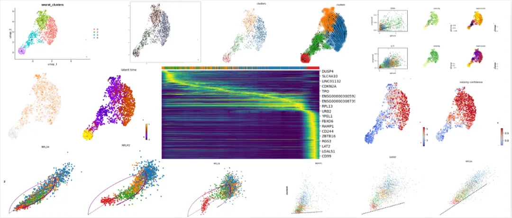
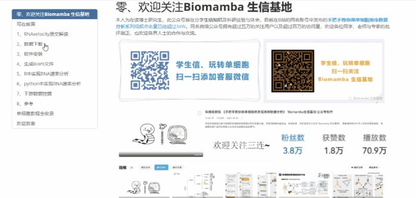
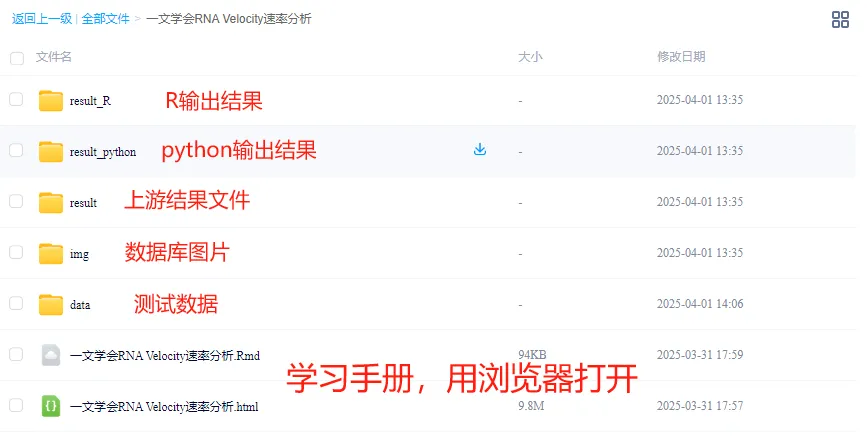

一文学会scRNA Velocity剪切速率分析
原文：https://mp.weixin.qq.com/s?__biz=MzAwMzIzOTk5OQ==&mid=2247529963&idx=2&sn=149c902aabdb2b4fa1fc2d148949b154&chksm=9b3c0cbbac4b85add0c2dbbae73d8e320bc6bdad4f20ceecdf8a2e95ce32219b487a586e4c51#rd 合集：单细胞教程全收录

RNA Velocity

 RNA丰度是单个细胞状态的一个强有力的指标。目前，单细胞RNA测序能够以高定量精度、灵敏度和通量揭示RNA丰度。然而，目前这种方法只能捕获到某一时间点的静态快照，这给诸如胚胎发生或组织再生等时间动态变化研究带来了挑战。因此，作者提出了RNA速率的概念(基因表达状态的时间导数)。通过RNA速率分析区分常见单细胞RNA测序中的未剪接和已剪接mRNA直接估算。RNA速率是一个高维向量，能够在数小时的时间尺度上预测单个细胞的未来状态。本次教程我们从RNA Velocity原文解读、**数据下载、软件安装、生成loom文件、 R中实现RNA速率分析、Python中实现RNA速率分析。**参考内容：
RNA丰度是单个细胞状态的一个强有力的指标。目前，单细胞RNA测序能够以高定量精度、灵敏度和通量揭示RNA丰度。然而，目前这种方法只能捕获到某一时间点的静态快照，这给诸如胚胎发生或组织再生等时间动态变化研究带来了挑战。因此，作者提出了RNA速率的概念(基因表达状态的时间导数)。通过RNA速率分析区分常见单细胞RNA测序中的未剪接和已剪接mRNA直接估算。RNA速率是一个高维向量，能够在数小时的时间尺度上预测单个细胞的未来状态。本次教程我们从RNA Velocity原文解读、**数据下载、软件安装、生成loom文件、 R中实现RNA速率分析、Python中实现RNA速率分析。**参考内容：
https://velocyto.org/velocyto.py/install/index.html
https://scvelo.readthedocs.io/en/latest/VelocityBasics.html
https://satijalab.org/seurat/articles/pbmc3k_tutorial.html
本教程基于R语言和Python完成，没有基础的小伙伴可见：5.5h入门R语言、生信Python速查手册 本教程基于Linux中的Rstudio环境演示，计算资源不足的同学可参考：生信分析为什么要使用服务器？ 足够支持你完成硕博生涯的生信环境 配置一个心仪的工作站(硬件+环境配置) 独享服务器，生信分析不求人 为实验室准备一份生物信息学不动产 本教程可视化集锦

-Biomamba
所见即所得
学习手册以html文件格式提供，可在浏览器中打开并翻阅学习：

教程目录 ：
一、文献解读
1.0 RNAvelocity原文解读1.1 摘要1.2 结果
(1)提出转录动力学模型
(2)小鼠嗜铬细胞验证
(3)小鼠海马体验证
(4)人类前脑验证
1.3 小结
二、数据下载
2.1 bam文件 2.2 repeatmask文件2.3gtf文件
三、软件安装
四、生成loom文件
五、R中实现RNA速率分析
5.1 安装R包
5.2 加载R包5.3 处理测试数据5.4 统计spliced和unspliced区域5.5RNA速率推断
六、python中实现RNA速率分析****
6.1 文件准备
6.2 加载python模块6.3 导入loom文件6.4 导入细胞降维坐标和分群文件6.5 轨迹推断
七、欢迎致谢********
7.1 关注基因可视化
7.2 鉴定重要基因7.3 细胞周期分析7.4 RNA速率的置信度7.5 潜在时间（latent time）分析7.6 Cluster-specific top-likelihood 基因八、参考九、单细胞教程全收录十、欢迎致谢
文末下载链接中包含以下内容：

测试文件约36.57GB ，大家注意按需下载！

往期订阅


生信基地现已开放终身订阅，现已包含几十篇订阅资料，未来37年持续更新：那就开放一个终身订阅吧~
2025已更新订阅内容：
《Cell》复现|中性粒细胞scRNA-seq图谱阐明抗肿瘤抗原呈递效力
《Cancer Cell》|时空单细胞揭示CRC的PD-1治疗免疫细胞动态
scRNA-seq数据基础分析手册(2025最新修订)代码复现|吞噬作用增强肿瘤中巨噬细胞的氧化代谢和免疫抑制特征一文学会scRNA Velocity剪切速率分析
一文学会四种scRNA-seq轨迹分析
一文学会四种scRNA-seq细胞通讯分析
一文学会四种基因共表达网络分析
肿瘤异质性分析必备| 一文学会四种scRNA-seq拷贝数变异分析
 解锁前需阅读：2025订阅须知
解锁前需阅读：2025订阅须知
订阅后获取学习手册下载链接：
请联系[Biomamba_zhushou]获取文件提取码
本推送教程链接：
https://pan.baidu.com/s/1dewgNR3EhDUjh96wHqoPDA?
整个2025订阅合集的百度云下载地址可见:
https://pan.baidu.com/s/1yXzQi0zBqh4ZLR6Hznckiw?
-Biomamba